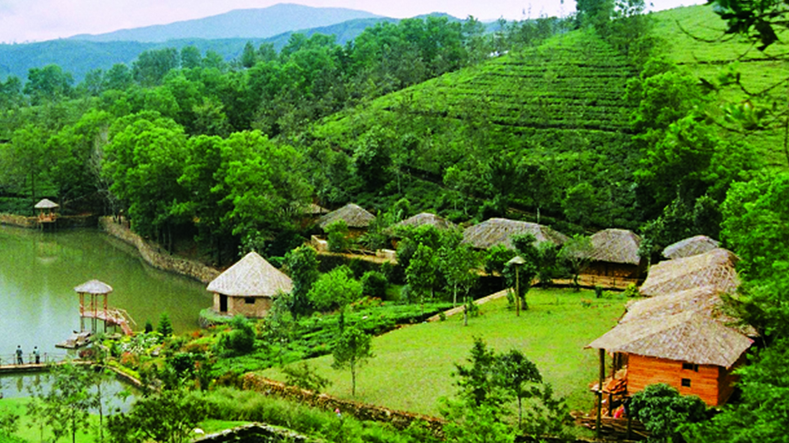
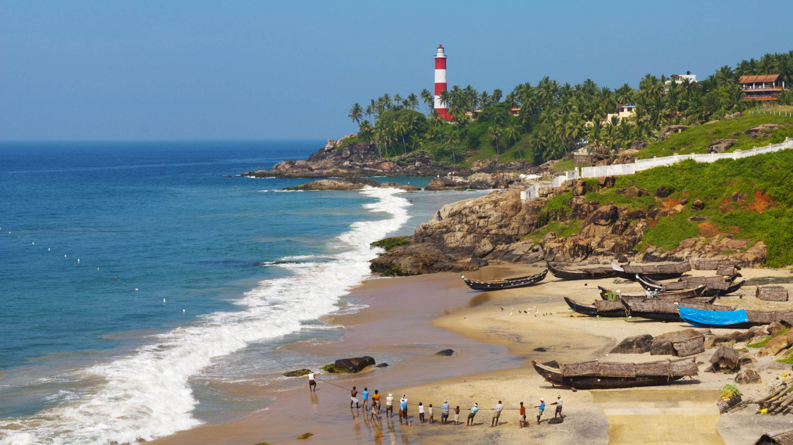
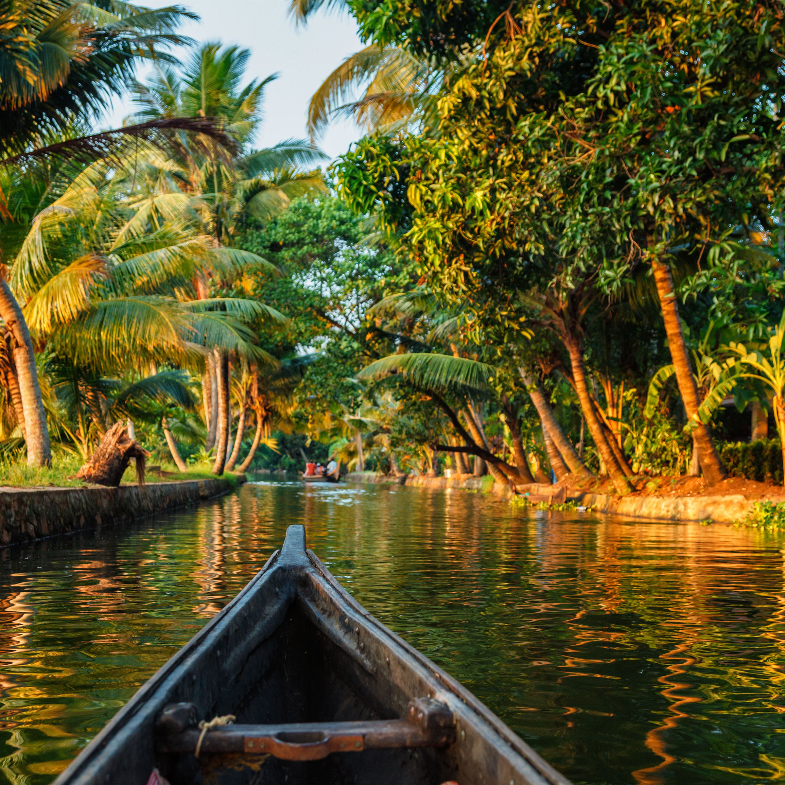
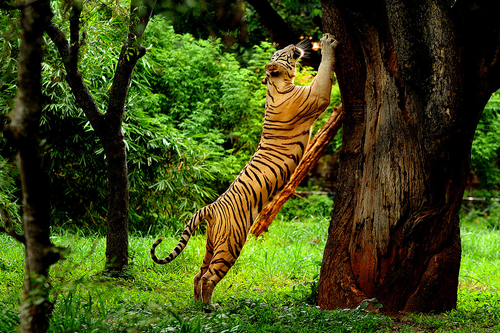
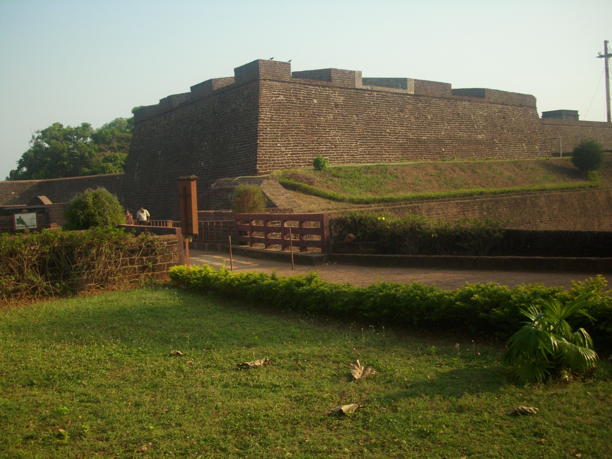

Kerala, a state situated on the tropical Malabar Coast of southwestern India, is one of the most popular tourist destinations in the country. Named as one of the ten paradises of the world by National Geographic Traveler, Kerala is famous especially for its ecotourism initiatives and beautiful backwaters.Its unique culture and traditions, coupled with its varied demography, have made Kerala one of the most popular tourist destinations in the world
Kerala has an endless list of tourist destinations that will interest any traveller. Renowned for its scenic locations and natural beauty, Kerala is sure to enchant any nature lover with its hills, backwaters, beaches, waterfalls and wildlife. The state also has a rich heritage and thriving culture one can explore by visiting the various forts, palaces, museums, monuments and pilgrim centers. Both natural and manmade brilliance await you at every turn.
Climate
The climate of Kerala is equable and varies little from season to season. Throughout the year, daily temperatures usually rise from the low 70s F (low 20s C) into the 80s F (27 to 32 °C). The state is directly exposed to the southwest monsoon, which prevails from July through September, but it also receives rain from the reverse (northeast) monsoon, which blows in October and November. Precipitation averages about 115 inches (3,000 mm) annually statewide, with some slopes receiving more than 200 inches (5,000 mm).

Hills
The beautiful land of Kerala offers myriad landscapes and experiences to enchants its visitors. These include the charming hill stations filled with expansive tea and coffee plantations, unending spice gardens, and a panoramic view of the mist clad hills. Whether on a family outing or a romantic escapade, the hill stations in Kerala provide ample opportunities for an exciting and unforgettable trip.Some of the popular hill stations in the region are Munnar, Vagamon, Paithalmala, Wayanad, Nelliyampathi, Nilambur, Elapeedika, Peermade, Thekkady and Ponmudi.
Kurumbalakotta Hill in Wayand is becoming a great tourist attraction now.

Beach
Kerala is home to a number of spectacular beaches that will take your breath away. As Kerala is a coastal state, some of the most popular tourist destinations in Kerala are beaches like Kovalam, Varkala, Chowara, Chavakkad, Nattika, Cherai, Kizhunna, Poovar and the list goes on and on. The Kerala coast is replete with exotic resorts and hotels where travellers can spend their time sunbathing, swimming or simply enjoying the stunning view.

Backwaters
The lush green landscape, diverse wildlife, and houses and villages that line the backwaters make a journey along these waterways seem like a journey through another world. No wonder the backwaters is one of the must-visit tourist places in Kerala. Don't miss it!.Houseboat or Kettuvallam rides in the backwaters are a major tourist attraction. Backwater tourism is centered mostly around[18] of Kerala like Alleppey, Kumarakom, Ashtamudi Lake, Kollam, Ponnani, Kavvayi Backwaters, and Bekal. Boat races held during festival seasons are also a major tourist attraction in the backwater regions.

Wildlife
Kerala is the magical ‘showcase’ of some of the most exciting wildlife experiences in Asia. From national parks to forest reserves and animal reserves, Wildlife Sanctuaries in Kerala boasts of unique, abundant, exotic, and rare species of flora and fauna as well as tigers, elephants, monkeys, birds, and mammals. Kerala also has six national parks containing protected and endangered species.

Historical monuments
This paradise of lush greenery has only got more on the table for all wandering eyes.
From the bygone royal era to ancient man’s last dwelling place, to the memories of some great heroes all of these monuments represents
Kerala’s unforgettable past.Historical monuments in Kerala include palaces, forts, and religious institutions.Notable forts include Bekal Fort, St. Angelo Fort, Arikady fort, Chandragiri fort, Hosdurg Fort, Palakkad Fort, Thalassery Fort, Fortaleza da São Tomé, Fort Kochi, St Thomas Fort, and Anchuthengu Fort.Notable palaces include Padmanabhapuram Palace, Kanakakkunnu Palace, Kowdiar Palace, Mattancherry Palace, Arakkal Palace, Shakthan Thampuran Palace etc. The Malabar Coast is also home to some of the oldest temples, oldest mosques, oldest churches, and oldest synagogues in South Asia. The historic trading food streets in Kerala include the S. M. Street (Sweetmeat street) at Kozhikode. Mappila Bay harbour at Kannur is home to both fort and palace. Thalassery Cuisine, a traditional style of cuisine originated in Northern Kerala due to its historical trade relations, also attracts tourists.

Kerala Ayurveda
Kerala Ayurveda is famous for its 5 prolonged treatment, named as Panchakarma. As part of this treatment medicated oil, herbs, milk, and special diet are used to cure all types of aliments.Ayurveda has been nurtured on these shores for over a thousand years and the world is slowly awakening to the practical applications of this ancient form of medicine. Kerala has,since time immemorial, been the perfect host to practice the same and boasts of a wide range of Treatment and Research Centres. We have provided below a collection of high-resolution images that showcase Ayurveda treatment being administered. Ayurveda focuses on the overall holistic growth and well-being of the individual and these visuals shall help you understand the great range and scope of its medicines.